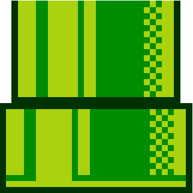

Vers années 70 elle commence a produire des bornes d’arcades et le tout premier jeu Mario né : Donkey Kong. Il s’agit d’un platformer dans lequel Mario doit sauver Pauline des mains de Donkey Kong. Le jeu se déroule sur un seul écran fixe et possède des graphismes basiques due aux limitations du 8-bit.